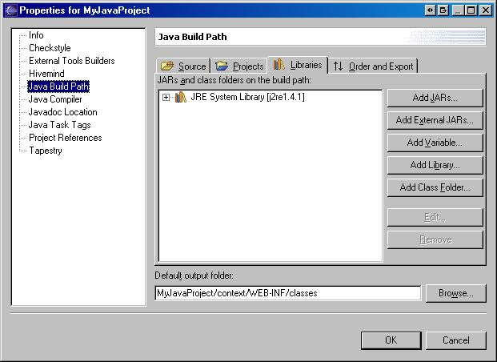
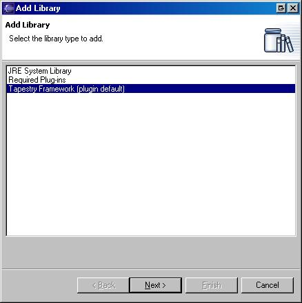
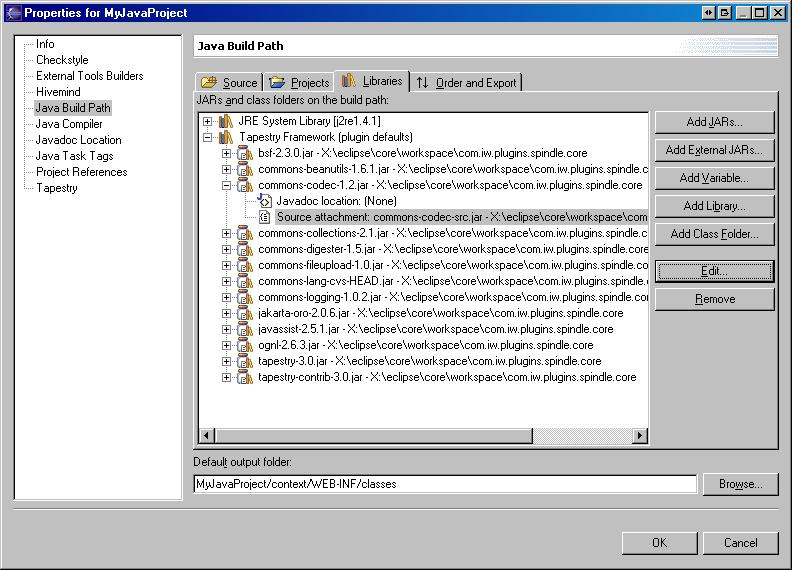

Here's how you manually add or remove the Tapestry Framework Library (See below for adding source code).
Described here is the process for adding the Tapestry Framework Library to any Java project. I've added notes in the steps below for actions that can be used to remove the library.
Select the project, right click and choose "Properties"
Step 2
Select "Java Build Path" from the list on the left to see the Java Build Path property page. Click on the "Libraries" tab.
If you are removing the library, it would be shown on the "Libraries" tab. Simply select the library can click the "Remove" button.

Click the "Add Library" button, then select "Tapestry Framework (plugin default)" from the Wizard that appears below:

Press "Next" and "Finish" (No image).
That's it. That's how to add or remove the Framework Library to or from a project.
Adding source code or javadoc to a jar in the Framework Library.
Look at this image:

To add source or javadoc to a jar contained in the Framework Library, simply expand the entry corresponding to the jar in the library, select:
Then click the "Edit" button. A dialog will open that allows you to setup the source or javadoc attachement. (No image - refer to the Eclipse "Java Development User Guide" for more information on attaching source or javadocs.